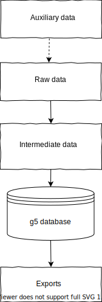

data/ :
gauquelin5
└── data
├── build
├── output
├── raw
└── tmp
Directories in bold : data/raw/ and data/build/ are versioned with the program.
Data transformations
The data and their transformations look like this :(yellow background corresponds to current state of the implementation).  Data manipulated by the program are divided in 3 distinct groups :
-
Raw data are input data, stored in
data/raw. -
Intermediate data, composed by :
-data/build/contains files edited by humans, used to convert raw files to tmp files, and to build the database.
-data/tmp/contains temporary files generated by program.
The program never generates data inbuild/; this prevents accidental erasure of human corrections by bugged programs. -
Output data, stored by default in
data/output/, are the "final" data generated by the program, to be downloaded.
The flow :
raw data --> intermediate data --> database has been used so far because it's easier to test and debug (it separates code which corrects data and code which merges date), but a direct import from raw data to database could be used in the future.
All data are stored in a common database (the program uses postgresql).
This database is considered as a convenient auxiliary, but it does not contain any information which is not present in g5 code or in
data/ directory.
As a consequence, the database can be rebuilt from scratch without loss of information.
What is good data ?
The definition of "good data" used in this program is :-
Expressed in open and standard formats.
- Encoded in UTF-8. The program does not handle other character encodings. Raw data encoded in other encodings still in use in some systems must be converted before being processed. All generated data use UTF-8.
- Use only open formats. The program uses csv, txt, json and yaml.
- Express dates in a standard format. The program uses ISO 8601. This choice is not completely satisfactory because ISO 8601 is not fully available for free.
- Express countries in a standard format. The program uses ISO 3166 2-letter codes.
- Relate places to a standard. The program uses geonames.org.
- Use a standard list of occupation codes among all data. A convenient standard list was not found. The program uses a home-made list of codes (which is not satisfactory, but at least consistent among generated files). Current list will probably change, because based on Gauquelin french codes.
-
Precise and identifiable without ambiguity.
- Different forms of a person's name are sometimes needed :
- Exact spelling of family and given names used in birth certificates.
- Name commonly used to designate the person.
- Spouse name for women.
- Nickname or stage name.
- Specify the gender of a person.
- Birth date and times should be expressed exactly as indicated in civil registries.
- Different forms of a person's name are sometimes needed :
-
Connected to other data sets.Persons should be related to at least one standard id. This is currently not done by the program, but preparatory code has been written to link the data to wikidata.org.
-
Verified and verifiable.A complete correction of data would need an exhaustive check on civil registries ; the documents used as a primary source of information should be available to anyone for check.
This has not been done. Verification is now possible at least for persons born in France before world war I, because most french civil registries can be freely consulted online.
See page Check.